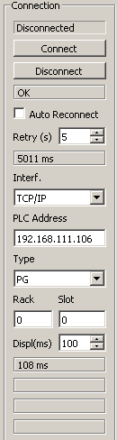

Target System; Settings for connection:
Interface: the connection interface is Ethernet via TCP/IP and cannot be changed...
PLC Address: set here the TCP/IP address of the target system (Step7-PLC or Sinamics Drive)
Type: Connection type may be 'PG', 'OP' or 'S7 Basic'. There is no functional difference.
Rack: Step7 rack of the CPU (usually Rack 0).
Slot: Step7 slot of the CPU. Slot 0 for S7-1500 or Slot 2 for S7-300 series
Displ(ms): Refresh time for display. The actual refresh time (in miliseconds) is visible below this field.